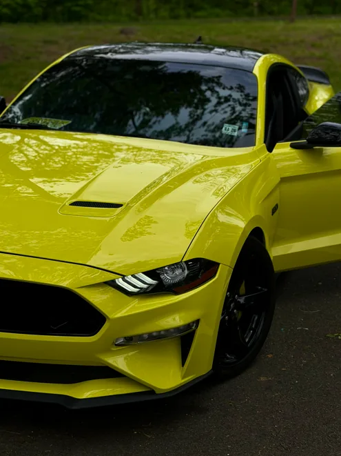
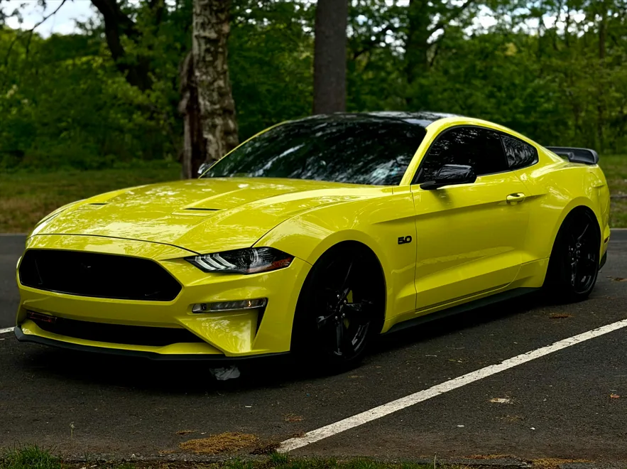
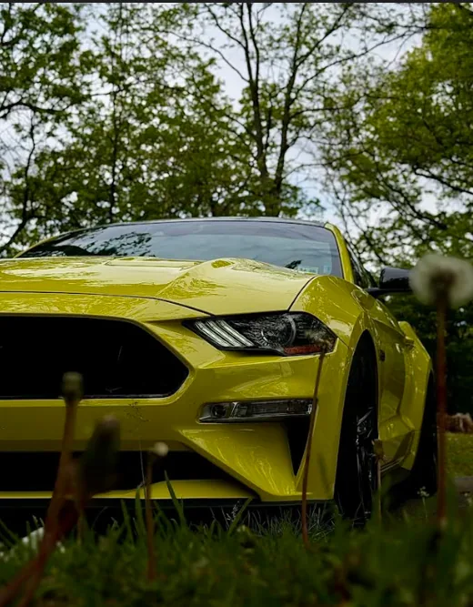

Event visuals
Gallery
These personal photographs are used to show the type of car-focused visual style planned for the event website.



Event visuals
These personal photographs are used to show the type of car-focused visual style planned for the event website.


